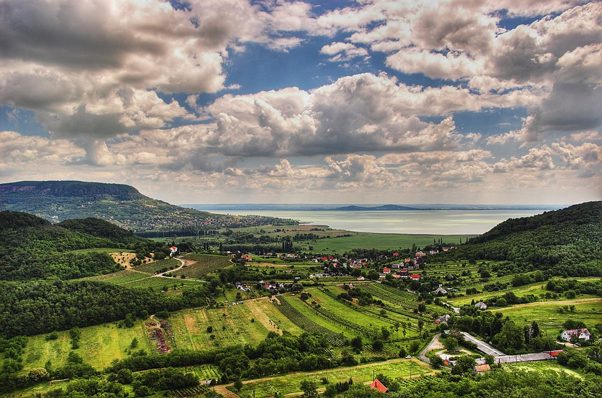
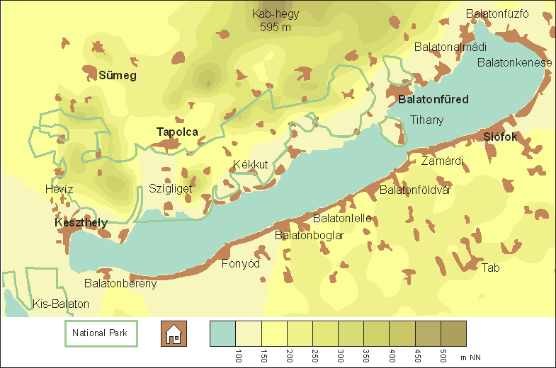

Der in Westungarn liegende Balaton (deutsch Plattensee) ist der größte Binnensee und der bedeutendste Steppensee Mitteleuropas. Er ist 79 km lang und im Mittel 7,8 km breit. Die Fläche beträgt z. Zt. (2018) 594 km² (14 km² mehr als die des Genfer Sees und 58 km² mehr als die des Bodensees). Bei der Halbinsel Tihany ist der See nur 1,3 km breit. Westlich davon liegen zwei Drittel des Sees. Die durchschnittliche Tiefe beträgt 3,25 m, die maximale Tiefe 12,5 m. Diese geringe Tiefe erleichtert die Durchwärmung; im Sommer kann die Wassertemperatur 30 °C übersteigen. Das Südufer des Sees ist flach, und das Nordufer wird von den Weinbergen am Tafelberg Badacsony und den Ausläufern des Bakony-Gebirges begleitet. Die Römer nannten den Balaton Pelso. Der ungarische wie auch der deutsche Name stammen vom slawischen blatna, was „sumpfige Marsch“ bedeutet. Im Ungarischen wird der See umgangssprachlich „Ungarisches Meer“ (magyar tenger)[1] oder kurz auch Balcsi[2] genannt. Seine Strände und die Heilbäder und Thermalquellen am See ziehen Badetouristen an. Die Hauptstadt Budapest und der Balaton sind die wichtigsten Tourismusziele in Ungarn. Wirtschaftliche Bedeutung haben auch der Weinanbau und der Fischfang am bzw. im See.
Balaton - Ungarn:

